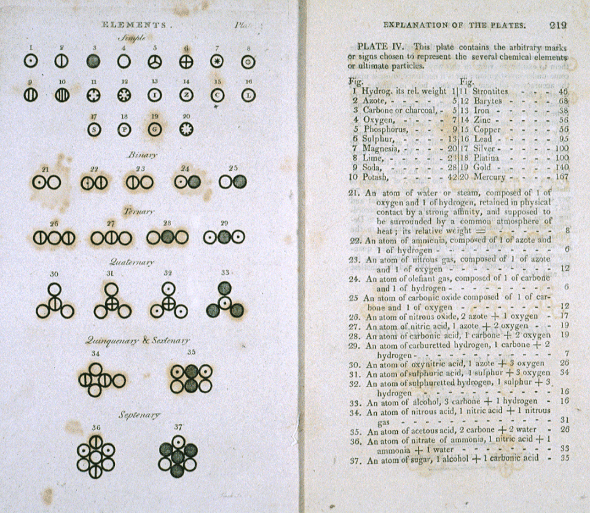

Los átomos
Las piezas de la química
Los átomos son las unidades de materia más pequeñas que componen los elementos químicos. Son extremadamente pequeños, de apenas unos 0.1 nanómetros de diámetro. Y a su vez están formados por cuerpos más pequeños: los electrones, protones y neutrones.
Historia de los modelos atómicos
Atomismo en la antiguedad
Durante la antigua Grecia, algunos filósofos propusieron que la materia no podría devidirse indefinidamente. Por ejemplo, que una gota de agua no se podía divir siempre en gotas de agua cada vez más pequeñas. Por lo que debía de existir una parte indivisible de materia a la que llamaron átomo.
Ley de las proporciones múltiples
A principios del siglo XIX, John Dalton descubrió que aunque dos elementos químicos pueden combinarse entre sí en distintas proporciones, entre ellas siempre se encontraba una relación sencilla de proporcionalidad. Lo que le llevó a pensar en la teoría atómica para poder explicarlo.
Por ejemplo, existen dos compuestos de óxido de estaño. Dalton descubrió que uno de ellos contiene exactamente el doble de oxígeno que el otro (por cada gramo de estaño sin oxidar). Si cada elemento está formado por átomos iguales entre sí, podríamos explicar de forma simple esta coincidencia pensando que en un óxido cada átomo de estaño se empareja con uno de oxígeno, mientras que en el otro óxido cada átomo de estaño va acompañado de dos átomos de oxígeno.

Átomos y moléculas de Dalton (1808)
Descubrimiento del electrón
Considero al atomo como conteniendo un gran numero de cuerpos mas pequeños que llamare corpusculos; estos corpusculos son iguales entre si; la masa de un corpusculo es la masa del ion negativo en un gas a baja presion, esto es, alrededor de $3 \cdot 10^{-26}$ de un gramo. En el atomo normal, esta reunion de corpusculos forma un sistema que es electricamente neutro. Aunque los corpusculos individuales se comportan como iones negativos, cuando se reunen en un atomo neutro el efecto negativo se compensa por algo que hace que el espacio por el que los corpusculos estan dispersos actúe como si tuviesen una carga de electricidad positiva igual en magnitud a la suma de las cargas negativas en los corpusculos. Considero la electrificacion de un gas debida a la ruptura de algunos de los atomos del gas, lo que produce la separacion de un corpusculo de alguno de los atomos. Los corpusculos separados se comportan como iones negativos, cada uno transportando una carga negativa, que por brevedad llamaremos la carga unidad, mientras que la parte del atomo que queda detras se comporta como un ion positivo con la unidad de carga positiva y una masa grande comparada con la del ion negativo (Thomson, J. J., 1899).
Descubrimiento del núcleo
La teoría de Sir J. J. Thomson se basa en la suposición de que la difusión debida a un único encuentro atómico es pequeña y la particular estructura supuesta para el átomo no admite una desviación muy grande de una partícula a al atravesar un sólo átomo, salvo que se suponga que el diámetro de la esfera de electricidad positiva es diminuto comparado con el diámetro de la esfera de influencia del átomo. — Rutherford (1911)